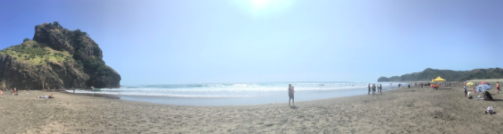

New Zealand
Leaving Boston

In January, I said several teary goodbyes to my family, my dog, my boyfriend, and my friends. I was heading out for six months on the other side of the world, by far the longest time I had ever spent away from home; I live only 30 minutes away from my university. I had never flown by myself and was nervous about navigating through the airport on my own. I did not know a single person in the Auckland study abroad program, I did not know a single person who lived in New Zealand, and I knew surprisingly little about the country I was about to live in for six months.
I was happy at Boston University and knew that I would have had a great semester if I stayed on campus, but I dreamed of studying abroad for many reasons (not limited to these):
- Studying, working, and living in another country with a group of students my age is a unique opportunity. I could choose to work abroad after graduation, but I see this seems unlikely; this was my chance.
- I was comfortable at BU, and I wanted to push myself outside of my comfort zone.
- I wanted to experience life and culture in another country.
- I was excited to explore a new place and combine my academic and work experiences with travel and adventures.
- I wanted the work experience that comes with an internship.
I chose New Zealand specifically because I love hiking and exploring the outdoors, and New Zealand is one of the most beautiful places on the planet. As an Earth and Environmental Sciences major, I was fascinated by the unique geology and resulting biota of the country. I knew this would be a great place to study environmental science, both at the University of Auckland and through an internship.
Very early in the morning January 2nd, 2020, I said my last goodbye to my mom at the airport door and set out for Aotearoa New Zealand.
Auckland
On January 4th, I finally landed in Auckland after more than 30 hours of travel (including an unfortunate 10 hour layover in Los Angeles, but I was almost too excited to mind). After a 12 hour flight in almost complete darkness, we landed just as the sun was rising in Auckland.
The first week was a whirlwind of activities and new experiences. I met my roommates, settled into my first-ever apartment, got to know the other students in my program, began my course at the University of Auckland, and explored the city and surrounding area on a field trip. I was a little overwhelmed at first, but quickly adjusted to my new life in Auckland.
 As the weeks went on, I continued to build friendships with other students in the program. I took several day trips around the North Island, as well as shorter excursions around the city of Auckland. I enjoyed my environmental studies course at the University of Auckland (even though it confirmed that I belong in environmental science), as well as my Aotearoa New Zealand history and culture course, which put everything I was able to observe through my personal experiences in context.
As the weeks went on, I continued to build friendships with other students in the program. I took several day trips around the North Island, as well as shorter excursions around the city of Auckland. I enjoyed my environmental studies course at the University of Auckland (even though it confirmed that I belong in environmental science), as well as my Aotearoa New Zealand history and culture course, which put everything I was able to observe through my personal experiences in context.
Trip to the South Island
Just as our summer classes were wrapping up, my dad flew in to visit me, and we had a fantastic week exploring the South Island together in a camper van. When he flew home, I joined my friends in the program for the second half of the trip.
This was much more than a fun trip for me. While I love nature and outdoors-oriented exploration, at times I have felt that this conflicts with my desires to be in control and plan ahead. What will we do if it starts raining? What if the first-come, first-served campground is full when we arrive? What if we get to the beach and there is no place to change into my bathing suit? On this trip, as well as on many of my other day trips with friends, we did much of the planning along the way. We did not know where we would be sleeping each night. We had a five day stretch without finding a place to shower. We went hiking in our bathing suits so we could swim at the top, even though our clothes got a little wet and our socks got a little dirty. We went swimming at the top of a waterfall.
I absolutely loved all of these experiences and was so happy to learn that I was able to overcome the part of me that wanted everything to go perfectly. I was able to live in the moment and just enjoy myself. This kind of personal growth was exactly what I was hoping for in my study abroad experience, and I am so grateful that I was able to explore the South Island--both for the incredible hikes and for the personal growth.

American vs. Kiwi Lifestyles
Although there are plenty of places in the United States where I could have had similar experiences, I believe that my experience aligns with several aspects of New Zealand culture. New Zealand is a beautiful country with abundant opportunities to get outside and experience nature, and while of course not every Kiwi is an avid hiker, I see clear connections between this nature-oriented lifestyle and a go-with-the-flow mindset.
Just as I experienced, nature can be unpredictable. It is impossible to make a perfect plan for outdoor activities; they require flexibility and acceptance of the unknown.
For example, I love hiking. However, I do not find every moment of a hike to be enjoyable. It is being able to experience the whole journey, and being willing to accept some discomfort along the way, that makes hiking fun for me. I believe that many New Zealanders embrace these kinds of experiences and the relaxed lifestyle that goes along with them. I particularly noticed this during my internship at NIWA, which I will discuss later.